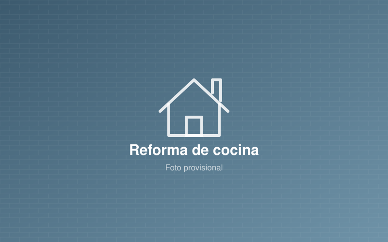
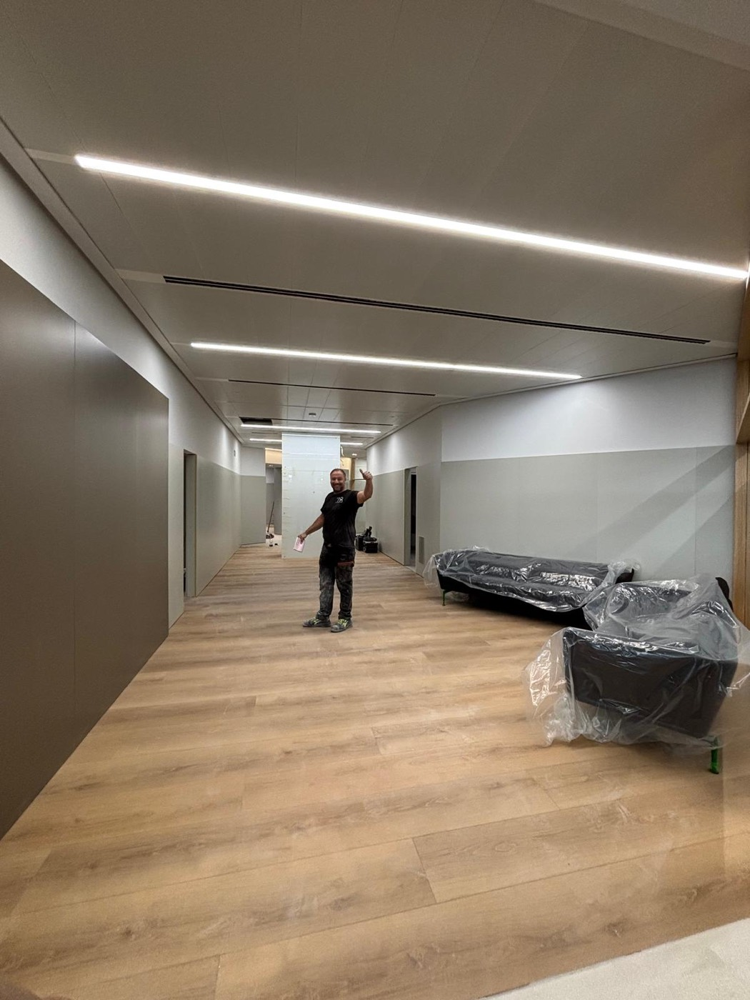

Reformas integrales
Renovamos tu vivienda de arriba abajo: distribución, instalaciones, suelos, cocina, baños y acabados.
Ver más →Reformas integrales, albañilería, cocinas, baños y pisos. Trabajo bien hecho, plazos claros y presupuesto sin compromiso.
Desde una pequeña obra de albañilería hasta la reforma integral de tu casa o local. Nos encargamos de todo de principio a fin.
Renovamos tu vivienda de arriba abajo: distribución, instalaciones, suelos, cocina, baños y acabados.
Ver más →
Tabiques, levantamiento de muros, enlucidos, alicatados, reparaciones y todo tipo de obra de albañilería.
Ver más →
Cocinas modernas y funcionales: alicatado, fontanería, electricidad, encimeras y montaje de muebles.
Ver más →
Cambio de bañera por plato de ducha, alicatados, sanitarios, mamparas y baños completos.
Ver más →
Actualizamos pisos antiguos o recién comprados para entrar a vivir o para alquilar.
Ver más →
Acondicionamiento de locales comerciales, oficinas y naves para abrir tu negocio cuanto antes.
Ver más →
Impermeabilizamos cubiertas planas y terrazas con lámina asfáltica para acabar con goteras y humedades.
Ver más →
Retejamos y reparamos tejados de teja árabe y cerámica: cambio de tejas rotas, goteras y cumbreras.
Ver más →
Construimos muros y vallados de bloque de hormigón y bloque cara vista para parcelas, chalets y naves.
Ver más →
Alicatamos baños y cocinas y colocamos suelos de porcelánico, gres y gran formato en viviendas, locales y naves.
Ver más →Más de tres décadas haciendo reformas nos avalan.
Precio claro y detallado desde el principio, sin sorpresas.
Te damos una fecha de entrega y la respetamos.
Protegemos tu casa y la dejamos limpia al terminar.

En Reformas Marian llevamos más de 30 años en el sector de la construcción. Empezamos con la albañilería y hoy hacemos todo tipo de reformas en Zaragoza: viviendas completas, cocinas, baños, locales y pequeñas obras.
Llámanos o escríbenos por WhatsApp y cuéntanos qué necesitas.
Vamos a ver la obra, tomamos medidas y te asesoramos.
Recibes un presupuesto detallado con precio y plazo cerrados.
Hacemos la reforma y te entregamos la obra limpia y terminada.
Algunas de las obras que hemos hecho en Zaragoza y alrededores.


No. Vamos a ver la obra, te asesoramos y te damos un presupuesto detallado totalmente gratis y sin compromiso.
Trabajamos en toda la ciudad de Zaragoza (Delicias, Actur, Centro, Universidad, San José, Las Fuentes, Torrero, Valdespartera, Miralbueno…) y en localidades cercanas como Utebo, Cuarte de Huerva, Cadrete, La Puebla de Alfindén o Villanueva de Gállego.
Depende del tamaño y del estado de la vivienda. Un baño suele estar listo en 1–2 semanas, una cocina en 2–3 semanas y un piso completo entre 1 y 3 meses. En el presupuesto te damos un plazo cerrado.
Sí. Te orientamos sobre la licencia o declaración responsable necesaria en el Ayuntamiento de Zaragoza y te ayudamos a tramitarla.
Sí. Además de reformas integrales hacemos trabajos de albañilería, reparaciones, cambio de bañera por plato de ducha, alicatados y cualquier obra pequeña.
Cuéntanos qué necesitas y te llamamos para concertar una visita gratuita.